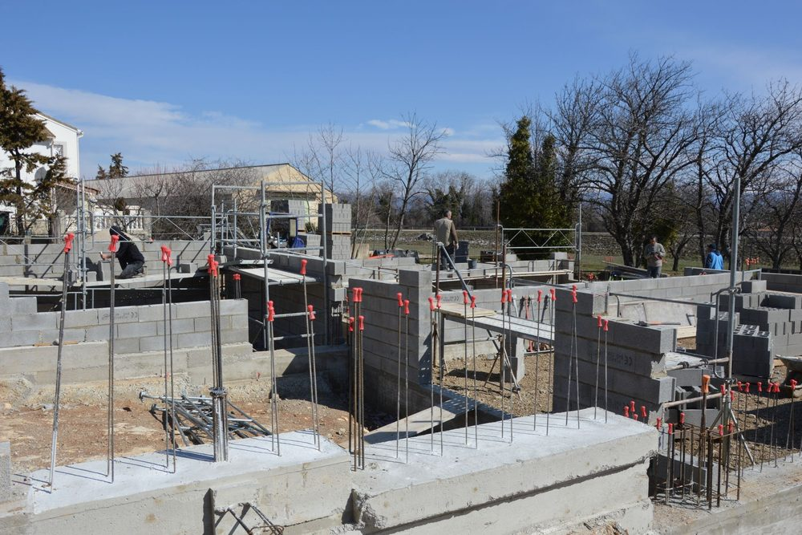
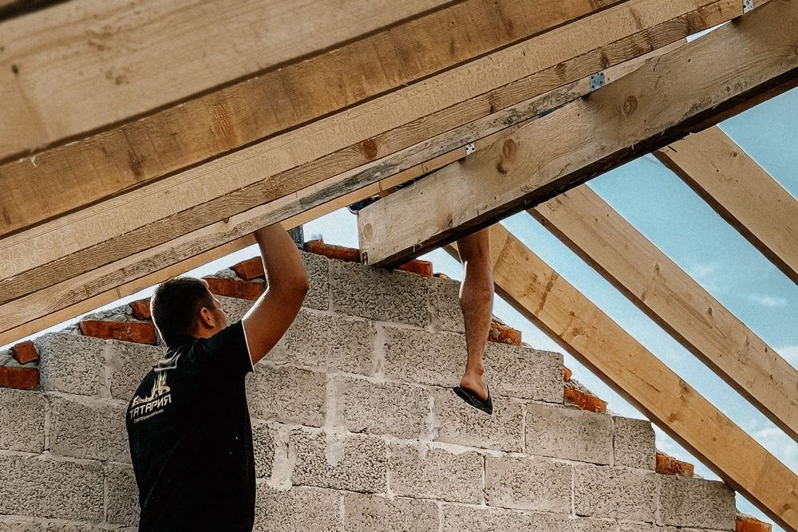

Agrandir en zone sismique 5 : ce qui change par rapport à la métropole
La Guadeloupe et la Martinique sont classées en zone de sismicité 5, le niveau le plus élevé du zonage français. Notre article sur les zones sismiques en France détaille ce classement. En pratique, il signifie qu'une extension ne se conçoit pas seulement pour porter son propre poids : elle doit aussi résister aux mouvements horizontaux du sol lors d'un séisme.
À cette contrainte s'en ajoutent deux autres, propres aux îles : les vents cycloniques, qui cherchent à arracher les toitures, et l'air marin, qui attaque les armatures du béton. Une extension réussie traite les trois en même temps, et le fait dès la conception, pas sur le chantier.
Le point de départ reste la maison existante. Beaucoup de maisons antillaises ont été construites avant les règles parasismiques actuelles, ou agrandies par étapes. Savoir comment elle est fondée, chaînée et couverte détermine ce que l'extension peut s'autoriser.
Relier ou séparer : le choix qui engage la maison existante
C'est la décision la plus importante d'une extension aux Antilles. Lors d'un séisme, deux bâtiments de hauteur, de masse ou de rigidité différentes ne vibrent pas de la même façon. S'ils sont accolés sans précaution, ils se heurtent, et c'est souvent l'ancien qui en souffre.
| Solution | Principe | Conséquence pour la maison existante |
|---|---|---|
| Extension séparée par un joint parasismique | Un vide sépare les deux bâtiments sur toute leur hauteur. Chacun a ses propres murs ou poteaux et se déplace librement. | L'extension se conçoit comme un bâtiment neuf. La maison existante n'est pas sollicitée par la partie neuve. |
| Extension liée à la maison | Chaînages et planchers de l'extension sont reliés à ceux de la maison par des armatures. | Les deux parties forment un seul ouvrage face au séisme : la résistance de la maison existante doit être vérifiée, et parfois renforcée. |
La réglementation parasismique (arrêté du 22 octobre 2010, article 3) prévoit des règles particulières pour les travaux sur un bâtiment existant. Une extension désolidarisée par un joint suit les règles des bâtiments neufs. Une extension liée relève des règles de l'existant : en zone 5, pour une maison, un calcul parasismique devient obligatoire quand la surface augmente de plus de 30 % si la maison entre dans le domaine d'application du guide CPMI-EC8 zone 5 ; sinon, quand la surface augmente de plus de 20 %, ou quand les travaux suppriment plus de 30 % d'un plancher ou plus de 20 % des murs de contreventement. En dessous de ces seuils, les travaux ne doivent en aucun cas aggraver la vulnérabilité de la maison au séisme. C'est pourquoi le joint est très souvent la solution la plus simple et la plus sûre.
Le joint n'est pas une simple fente : sa largeur se calcule à partir des déplacements de chaque bâtiment, et il doit rester libre, vide ou garni d'un matériau très compressible. Un joint bouché par du mortier ou des débris ne joue plus son rôle. Lorsque l'ouverture d'un passage dans le mur de la maison est nécessaire, elle se dimensionne comme toute ouverture dans un mur porteur.
Fondations et chaînages : la continuité qui fait tenir face au séisme
Une maison résiste au séisme quand ses éléments restent solidaires : les fondations sont reliées entre elles, les murs sont encadrés de chaînages horizontaux et verticaux en béton armé, et les planchers transmettent les efforts jusqu'aux murs. Une extension doit reproduire cette continuité dans sa propre structure.
- Le sol d'abord : le rapport géotechnique fixe le niveau d'assise et signale les sols sensibles, fréquents sur certains terrains en pente ou en bord de mer. Il est établi par un géotechnicien, pas par MH Structure, qui l'exploite pour dimensionner.
- Des fondations reliées : semelles et longrines forment un réseau qui empêche les appuis de se déplacer les uns par rapport aux autres.
- Des chaînages continus : les armatures en attente dans les fondations se prolongent dans les poteaux et chaînages verticaux, avec des recouvrements et des ancrages définis sur les plans.

L'attestation parasismique au dépôt du permis
Depuis le 1er janvier 2024 (décret n° 2023-1173), lorsqu'une extension de maison relève d'un permis de construire en zone de sismicité 5, le dossier doit comporter une attestation parasismique au stade de la conception : c'est la pièce PCMI13 du formulaire, que les professionnels appellent souvent « AT1 ». Une seconde attestation, la pièce AT.2, accompagne la déclaration d'achèvement des travaux. Pour une maison, ces attestations peuvent être signées par un contrôleur technique ou par un « constructeur » lié au maître d'ouvrage par contrat (architecte, entrepreneur, bureau d'études structure). Si les travaux n'imposent aucun calcul parasismique, l'attestation le dit en concluant « sans objet ». Dans les autres cas, elle ne se rédige pas après coup : elle suppose que la structure ait été étudiée.
Notre article sur les attestations parasismiques AT1 et AT2 explique leur rôle et leur moment. Pour un projet en Guadeloupe, consultez aussi notre page dédiée à l'attestation parasismique en Guadeloupe, celle de la Martinique ou celle de Saint-Martin.
Côté règles de calcul, la structure se dimensionne selon l'Eurocode 8 pour le séisme et l'Eurocode 2 pour le béton armé. Pour une maison qui respecte ses conditions de forme, de dimensions et de matériaux, le guide ministériel CPMI-EC8 zone 5 (édition 2020) peut remplacer le calcul selon l'Eurocode 8. Dans plusieurs communes de Guadeloupe (dont Petit-Bourg), de Martinique et à Saint-Martin, un spectre de microzonage sismique peut en outre remplacer le spectre réglementaire. Vérifier si le projet entre dans ce cadre fait partie de l'étude parasismique en zone 5.
Le vent cyclonique : tenir la toiture
Lors d'un cyclone, le vent ne pousse pas seulement sur les murs : il crée une forte dépression sur la toiture, qui tend à la soulever. La plupart des toitures emportées le sont parce que leur liaison avec les murs a cédé, pas parce que la charpente s'est rompue.
- Ancrer la charpente dans le chaînage haut des murs, par des pièces métalliques dimensionnées, et non simplement posée ou clouée.
- Calculer les efforts selon l'Eurocode 1 (actions du vent) et son annexe nationale. En Guadeloupe et en Martinique, une réglementation propre au vent cyclonique, issue d'un décret du 23 novembre 2023 et d'un arrêté technique de 2024, complète ce calcul avec des coefficients d'exposition cartographiés : son application au projet se vérifie dès la conception.
- Soigner les débords : avant-toits et auvents sont les premières prises au vent et doivent être tenus en conséquence.

L'air marin : un béton qui doit durer
Près du littoral, les chlorures de l'air salin pénètrent lentement le béton jusqu'aux armatures, qui rouillent, gonflent et font éclater le parement. Une extension en bord de mer se conçoit donc avec une classe d'exposition adaptée, qui fixe la qualité du béton et l'épaisseur d'enrobage des armatures. Ces deux paramètres figurent sur les plans et doivent être respectés au coulage.
Notre article sur le béton en milieu marin et tropical détaille ces mécanismes et les bonnes pratiques.
Ce que fait MH Structure sur une extension aux Antilles
MH Structure est un bureau d'études structure installé en Guadeloupe, à Petit-Bourg, et intervenant aussi en Martinique. Sur un projet d'extension, nous intervenons sur :
- Le diagnostic de la maison existante au droit du raccordement, et sa vulnérabilité si l'extension lui est liée.
- Le choix argumenté entre joint parasismique et liaison, avec la largeur de joint calculée.
- Les attestations parasismiques à joindre au permis de construire et à la déclaration d'achèvement des travaux.
- La note de calcul béton armé selon l'Eurocode 2 et l'Eurocode 8, avec la vérification au vent de la toiture.
- Les plans de coffrage et d'armatures remis à l'entreprise.
Nous ne réalisons ni l'étude de sol, ni les travaux, ni la maîtrise d'oeuvre d'exécution. Nos recommandations de mise en oeuvre sont des conseils à l'attention de l'entreprise.
Vous préparez une extension en Guadeloupe ou en Martinique ? Décrivez-nous la maison existante et votre projet : nous vous indiquons ce que l'étude doit couvrir et si une attestation parasismique est nécessaire. Devis gratuit sous 48h.
Questions fréquentes
Faut-il un joint entre l'extension et la maison existante aux Antilles ?
Ce n'est pas automatique, mais c'est souvent la solution la plus sûre. En zone sismique 5, la maison et l'extension ne vibrent pas de la même façon lors d'un séisme. Un joint parasismique les laisse bouger séparément sans qu'elles se heurtent ; sa largeur se calcule. Une extension liée à la maison est possible, mais elle engage la structure existante, dont la résistance doit alors être vérifiée.
Une extension aux Antilles nécessite-t-elle une attestation parasismique ?
Oui, dès que l'extension relève d'un permis de construire. Depuis le 1er janvier 2024, en zone de sismicité 5, le dossier de permis d'une maison doit comporter une attestation parasismique (pièce PCMI13, souvent appelée AT1), et la déclaration d'achèvement une seconde attestation (pièce AT.2). Pour une maison, elles peuvent être signées par un contrôleur technique ou par un constructeur lié au maître d'ouvrage par contrat, par exemple le bureau d'études structure. Si les travaux n'imposent aucun calcul parasismique, l'attestation conclut « sans objet ».
Quelles règles de calcul s'appliquent à une extension en Guadeloupe ou en Martinique ?
Le béton armé se dimensionne selon l'Eurocode 2, le séisme selon l'Eurocode 8 et le vent selon l'Eurocode 1, chacun avec son annexe nationale. Pour le séisme, une maison qui respecte son domaine d'application peut aussi être conçue avec le guide ministériel CPMI-EC8 zone 5 (édition 2020), qui propose des règles simplifiées. C'est le bureau d'études qui vérifie si le projet entre dans ce cadre.
MH Structure intervient-il en Guadeloupe et en Martinique ?
Oui. MH Structure a un bureau à Petit-Bourg, en Guadeloupe, et intervient aussi en Martinique. Nous établissons l'attestation parasismique, la note de calcul et les plans de coffrage et d'armatures. Nous ne réalisons ni l'étude de sol, confiée à un géotechnicien, ni les travaux, exécutés par l'entreprise de votre choix.